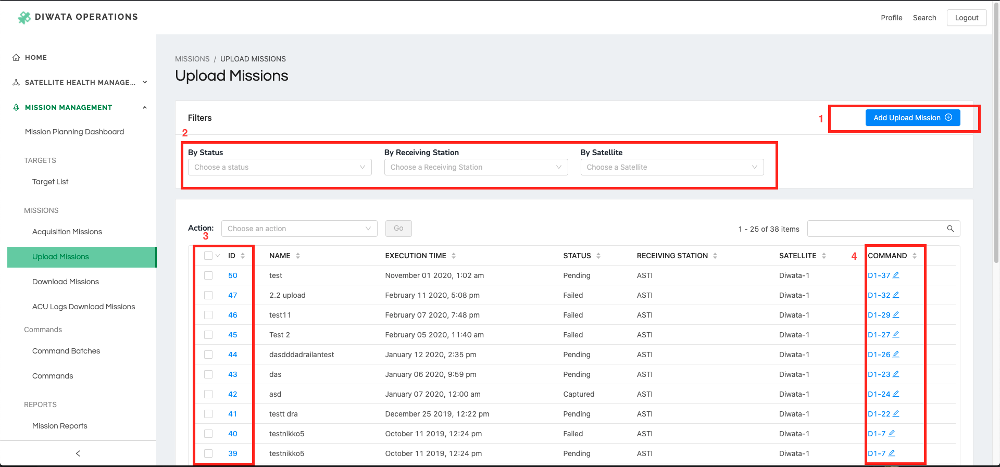
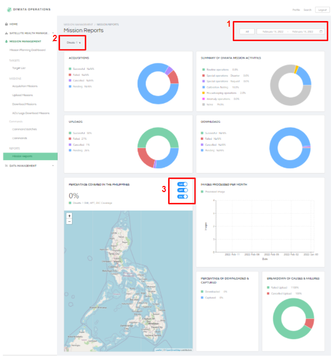

Diwata Operations Software User Guide
The Diwata Operations Software (DOS) is an integrated system containing modules for managing different components within the satellite operations workflow. The DOS is divided into three major modules: Missions Management, Data Management, and Satellite Health Management.
From an architectural standpoint, the DOS serves as a central repository of data for multiple software systems developed in GRASPED.
Accessing the Website
The Diwata Operations Software may only be accessed by authorized users using this link.

Missions Management
The Missions Management module was designed to help in mission planning and management of satellite passes. This module includes automated pass prediction features, similar to the Microsatellite Scheduler, as well as a satellite command generator.
Targets
Page contents:
- Create new targets
- Filters
- Actions (Delete multiple targets)
- Search bar to find keywords on the table
- View/edit target details
Filter Description
| Filter Label | Description | List of Values |
|---|---|---|
| Name | Filter by name | ---- |
| Classification | Filter by classification | Integer from 0-5 Default value: All |
| Purpose | Filter by purpose | Agriculture, Agriculture Validation, Agroforestry, Aquaculture, Calibration Validation, Coastal Monitoring, Cultural Heritage, Fisheries, Forest Validation, Forestry, Flood and storm surge, Land Use Change, Ocean Validation, Protected Area, Security, Typhoon, Tourism, Urban, Validation Site(urban) Default value: All |
How to create new entries?
- Click the
Add Targetbutton at the upper right side of filters to redirect to Add Target Page.

2. Input name, select target by drawing polygon on the map, tick/untick is active status, select classification and purpose, and input requred bands.
3. Name, classification and purpose are required fields.
4. After filling out the form, click Submit button.
5. New target will be added to the table in Targets Page.
How to view or update details of a mission?
- Click the ID of target to redirect to View Target Page.
- If details are edited, click
Submitbutton to update.
Acquisition Missions
Basic functions on Acquisition Mission includes, add mission, filter missions, edit commands on the table and perform batch actions.
- Click the Add Mission. Add the necessary parameters for the mission, and then click Save. You may also choose Save and add another if you wish to save another record, or Save and continue editing if you don't want to view and edit the recorded data.
- Perform filters by selecting values on the drop-downs.
- Type a word on search bar to find keywords on the table.
- You can perform batch actions when selecting an item on table. You can select multiple. Then select an action from the drop down list. Click Go button to update selected items.
Upload Missions

Basic functions on Upload Mission includes, add upload mission, filter missions, edit commands on the table and perform batch actions.
- Click the Add Upload Mission. Add the necessary parameters for the upload mission, and then click Save. You may also choose Save and add another if you wish to save another record, or Save and continue editing if you don't want to view and edit the recorded data.
- Perform filters by selection values on the drop-downs.
- You can perform batch actions when selecting an item on table. You can select multiple.
Download Missions
Basic functions on Download includes, add download mission, filter missions, edit commands on the table and perform batch actions. Fairly similar with the Upload mission module.
-
Click the Add Download Mission. Add the necessary parameters for the download mission, and then click Save. You may also choose Save and add another if you wish to save another record, or Save and continue editing if you don't want to view and edit the recorded data. Some settings are Diwata-2 specific settings so you need to input necessary parameters for the compiler to work properly. Add the bands, starting addresses, and number of images to be downloaded, respectively.
-
Perform filters by selection values on the drop-downs.
- You can perform batch actions when selecting an item on table. You can select multiple.
ACU Log Download Missions
- You may click the ACU Log Download Missions button to view and update the current records or the Add button if you want to add a new record.
Add the necessary parameters for the mission, and then click Save.
- Perform filters by selecting values on the drop-downs.
- You can view details of the ACU log item when you click the ID. You can also perform batch operations by checking the check-boxes. You can select multiple.
- You can also view the commands by click the items on the Command column.
Commands and Command Batches
Command Module
Commands are generated by default whenever missions are created. The list of commands can be found in the Command tab.
Viewing a command
- Upon clicking the Commands button, you will see all the generated commands from all the different missions (acquisition, download, etc.). Click on the ID to view/edit the content of a command.
You can now edit the fields and click save after performing a change.
Note: Commands that are created using the Add command module cannot be linked to an existing mission. To be able to link a mission and a command, create a mission and then find the generated command and edit it.
Command Batch Module
Command batches are a group of commands. It may be a combination of upload, download, acu log download, and acquisition missions.

- To create a batch, go to the command batches module or click the Add button.
- Add the necessary parameters.
Command Batch List
Supply the ID of the command that will be added to the batch. You can add multiple.
Reports

Page contents:
- Date Filter
- Satellite Filter
- Payload Filter
How to apply filters?
- On the upper left side, select a satellite to filter data shown on graphs and table. Once satellite filter is changed, graphs and table will reload and new data will be fetched based on the selected satellite. Default value of satellite filter is Diwata-1.
- On the upper right side is the date range filter. To apply this filter, select two dates from the date range selector. To cancel this filter, click the
Allbutton. As default, data shown on graphs and table showsAllor no date range is initially set. - From the PERCENTAGE COVERED IN THE PHILIPPINES, data shown on the map can be filtered by payload. Initially, data captured by SMI, HPT and ERC are included. Toggle the payload to exclude it on map.
- Refresh page to reset all filters.
Data Management
The Data Management Module contains tools for storing and accessing images and metadata in different levels of data processing. In this module, users may download images for processing and upload derived products.
A Data Processing Pipeline is also integrated into the module to automate most of the existing Diwata-1 and Diwata-2 Level 1 product generation.
Raw Files
Page contents:
- Filters
- Download options
- Search bar to find keywords on the table
- View more details
Filter Description
| Filter Label | Description | List of Values |
|---|---|---|
| Type | Filter by type | XTLM, QTLM |
| Receiving Station | Filter by receiving station | ASTI, TU, Hakodate, Kiruna |
| Packet Loss | Filter by range of packet loss in percentage | Accepted Values: Integer from 0 to 100 |
| Satellite | Filter by satellite | Diwata-1, Diwata-2, Maya-1 |
| SHU Address | Filter by SHU Address | Accepted Value: Positive Integer |
| Upload Time | Filter by range of upload time. | Sample: 2022-01-12 00:00:00 ~ 2022-02-16 23:59:59 Format: YYYY-MM-DD HH:MM:SS |
| Created Time | Filter by range of created time. | Sample: 2022-01-12 00:00:00 ~ 2022-02-16 23:59:59 Format: YYYY-MM-DD HH:MM:SS |
| Capture Time | Filter by range of capture time. | Sample: 2022-01-12 00:00:00 ~ 2022-02-16 23:59:59 Format: YYYY-MM-DD HH:MM:SS |
| Download Time | Filter by range of download time. | Sample: 2022-01-12 00:00:00 ~ 2022-02-16 23:59:59 Format: YYYY-MM-DD HH:MM:SS |
| Uploader | Filter by uploader | ----- |
How to view more details?
- From the selected row, click the Eye Icon at the last row to display the drawer containing details of the selected capture file.
- The drawer has the following details:
a. Image - click the icon at the top right side of the image to view in full screen. Press Esc to exit full screen. Available in Raw Image Page ang Merged Raw Image Page.
b. Capture details
c. Files - list of all downloadable files and images. Click the link to download.
d. Extracted Images - Click link to view image in new tab. Available in Telemetry Page only.
e. Raw Images - Click link under Raw column to download the.rg3file. Click.binlink under Telemetry column to redirect to Telemetry, a drawer will appear to show details of Telemetry. Available in Merged Raw Images Page only.
How to download data?
Option 1: From table, using checkbox
- Tick the row/s you plan to download.
- Download button will be enabled when at least one row is selected.
- Choose from the file formats option you wish to download.
- Once a file format is selected, download will automatically proceed.
Option 2: From Drawer
- From the chosen row, click the Eye Icon at the last row to display the drawer containing details of the selected capture file.
- Look for the
Filessection on the drawer. - Click the link beside the file name you want to download.
- If clicked link is an image (.jpg), new tab will be opened to view the image. For other file format, clicked link will automatically download the selected file.
Captures

Page contents:
- Filters
- Actions for multiple selected rows:
a. Move to Raw - available in Level 0 Page
b. Move to Level 0 - available in Level 1 Page
c. Add to Cart - for batch download, not available in Level 1 Page
d. Download options
e. Sync to Distribution - available in Level 1 Page - Capture tags (editable field)
- More actions:
a. View more details
b. Move to Raw - available in Level 0 Page
c. Move to Level 0 - available in Level 1 Page
d. Add to Cart - for batch download, not available in Level 1 Page - View Cart
Filter Description
| Filter Label | Description | List of Values |
|---|---|---|
| Capture ID | Filter by Capture ID | ---- |
| Is Published | Filter by publish status. Default: All |
Published, Unpublished |
| Band | Filter by band. Multiple Select |
HPT-R, HPT-G, HPT-B, HPT-N, SMI-N, SMI-V, MFC, WFC |
| Mission ID | Filter by mission ID | ---- |
| Created Time | Filter by range of created time. | Sample: 2022-01-12 00:00:00 ~ 2022-02-16 23:59:59 Format: YYYY-MM-DD HH:MM:SS |
| Capture Date | Filter by range of capture time. | Sample: 2022-01-12 00:00:00 ~ 2022-02-16 23:59:59 Format: YYYY-MM-DD HH:MM:SS |
| Packet Loss | Filter by range of packet loss in percentage | Accepted Values: Integer from 0 to 100 |
| Products | Filter by products. Multiple Select |
L1A, L1B, L1C, no L1A, no L1B, no L1C |
| Tags | Filter by tags. Multiple Select |
Urban, Vegetation, Coastal, Agriculture, Forestry, Processable |
How to view more details?
- From the selected row, click the Eye Icon at the last row to display the drawer containing details of the selected capture file.
- The drawer has the following details:
a. Image - click the icon at the top right side of the image to view in full screen. Press Esc to exit full screen.
b. Capture details
c. Files - list of all downloadable files and images. Click the link to download.
d. Georeferencing (POC only) - Details from mission column is clickable to redirect to View Acquisition Mission Page.
How to download data?
Option 1: From table, using checkbox
- Tick the row/s you plan to download.
- Download button will be enabled when at least one row is selected.
- Choose from the file formats option you wish to download.
- Once a file format is selected, download will automatically proceed.
Option 2: From Drawer
- From the chosen row, click the Eye Icon at the last row to display the drawer containing details of the selected capture file.
- Look for the
Filessection on the drawer. - Click the link beside the file name you want to download.
- If clicked link is an image (.jpg), new tab will be opened to view the image. For other file format, clicked link will automatically download the selected file.
Option 3: From download cart
- From the chosen row, click the Cart Icon at the last row to add to cart.
View Cartbutton, beside Profile in navigation bar, will appear if at least one capture is added to cart.- Click
View Cartbutton to redirect to Download Cart page. - You may choose to download all, delete all or delete individual capture from the list.
Capture Groups

Page contents:
- Filters
- Actions
- Search bar to find keywords on the table
- Capture ID - clickable to view and edit details
- Is Published - Toggle to allow capture to be available in distribution site (Image Browser)
- Capture tags (editable field)
- Capture Group - clickable to redirect to View Capture Group Page, available in Capture Group Products Page
- View details
Filter Description
| Filter Label | Description | List of Values |
|---|---|---|
| Group Product ID | Filter by Group Product ID | ---- |
| Is Published | Filter by publish status. Default: All |
Published, Unpublished |
| Payload | Filter by payload. Multiple Select |
HPT, MFC, WFC, SMI, ERC |
| Product Type | Filter by product type. | Stacked, Mosaic |
| Tags | Filter by tags. Multiple Select |
Urban, Vegetation, Coastal, Agriculture, Forestry, Processable |
| Group ID | Filter by Group ID | ---- |
| Created Time | Filter by range of created time. | Sample: 2022-01-12 00:00:00 ~ 2022-02-16 23:59:59 Format: YYYY-MM-DD HH:MM:SS |
| Upload Time | Filter by range of upload time. | Sample: 2022-01-12 00:00:00 ~ 2022-02-16 23:59:59 Format: YYYY-MM-DD HH:MM:SS |
How to view more details?
- From the selected row, click the Eye Icon at the last row to display the drawer containing details of the selected capture file.
- The drawer has the following details:
a. Image - click the icon at the top right side of the image to view in full screen. Press Esc to exit full screen.
b. Capture details
c. Capture Group Products - available in Capture Groups Page
d. Captures - available in Capture Groups Page - Another option is to click the ID from the
Idcolumn to redirect to View Page. From this page, some fields can be updated. ClickSavebutton to submit changes. - On Capture Group Products,
Capture Groupcolumn details can be clickable. Once cliked, you will be redirected to View Capture Group Page.
How to update publish status?
Option 1: From table, using checkbox
- Choose an action from the dropdown list above the table.
- Select caputure/s to update by ticking the check box on each row.
- If at least one mission is selected, the
Gobutton beside the action dropdown list will be clickable, and number of selected missions will be shown beside the Go button. - Click
Gobutton to update selected missions.
Option 2: From table, toggle publish/unpublish
- Toggle publish/unpublish under
Published?column on the table.
Option 3: From View Capture Group Page
- Click the capture group ID from the
Idcolumn to redirect to View Page. - Check/uncheck the publish status field or change other editable fields.
- Click
Savebutton to submit changes.
Satellite Health Management
ACU Logs
Attitude Control Unit (ACU) log files contain information recorded onboard the satellite describing the state of its positioning and orientation at a given time. The ground station operators download the log files regularly from the satellites and upload them into a cloud service.
Originally, the contents of the files can be inspected by manually running a depacketer software. This process was tedious and only provided information on-demand.